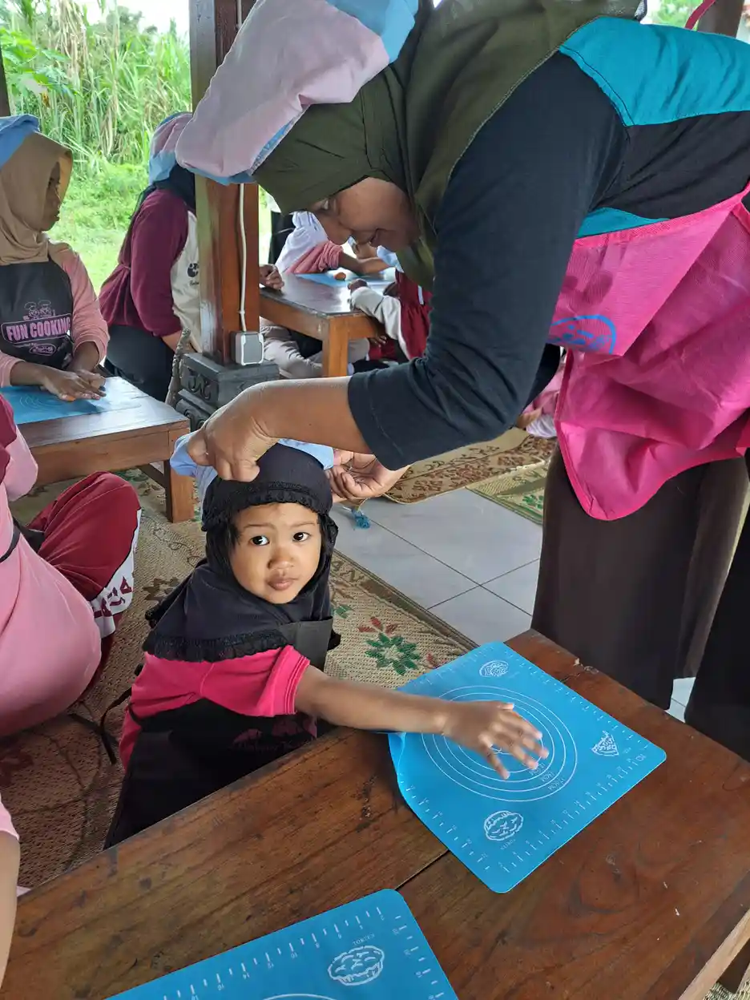

Terapi wicara adalah salah satu bentuk intervensi terapeutik yang dirancang khusus untuk membantu anak-anak maupun orang dewasa yang mengalami gangguan dalam berbicara, berbahasa, dan berkomunikasi. Dalam dunia medis, terapi ini dikenal juga dengan istilah speech therapy atau speech-language pathology. Terapi wicara dilakukan oleh seorang terapis wicara yang telah menempuh pendidikan dan pelatihan khusus di bidang patologi wicara dan bahasa.
Di Indonesia, kebutuhan akan terapi wicara anak terus meningkat seiring dengan meningkatnya kesadaran orang tua terhadap pentingnya deteksi dini gangguan bicara dan bahasa. Data dari Kementerian Kesehatan RI menunjukkan bahwa sekitar 5 hingga 10 persen anak usia prasekolah di Indonesia mengalami gangguan komunikasi dalam berbagai bentuk, mulai dari keterlambatan bicara ringan hingga gangguan bahasa yang kompleks.
Di Yayasan Ukhuwah Kaffah Amanatullah (YUKA), kami memahami betul betapa pentingnya kemampuan berkomunikasi bagi perkembangan anak secara menyeluruh. Melalui pengalaman kami mendampingi anak berkebutuhan khusus (ABK) di Sekolah Inklusi Taruna Imani, Sleman, Yogyakarta, kami menyaksikan langsung bagaimana terapi wicara mampu mengubah kehidupan seorang anak yang semula kesulitan mengekspresikan diri menjadi anak yang percaya diri dan mampu berkomunikasi dengan lingkungan sekitarnya.
Artikel ini disusun untuk memberikan pemahaman yang menyeluruh tentang terapi wicara, mulai dari pengertian, manfaat, tanda-tanda anak membutuhkan terapi, proses pelaksanaan, hingga estimasi biaya. Kami berharap informasi ini bermanfaat bagi para orang tua, guru, dan siapa pun yang peduli terhadap tumbuh kembang anak.
Daftar Isi
Apa Itu Terapi Wicara?
Terapi wicara adalah proses rehabilitasi yang bertujuan untuk mengatasi gangguan komunikasi pada seseorang, baik yang berkaitan dengan kemampuan berbicara (produksi suara dan artikulasi), bahasa (kemampuan memahami dan menggunakan kata-kata serta kalimat), maupun fungsi menelan. Terapi ini dilaksanakan oleh tenaga profesional yang disebut terapis wicara atau speech-language pathologist (SLP).
Secara lebih rinci, terapi wicara mencakup beberapa area utama yang saling berkaitan:
- Gangguan artikulasi: Kesulitan dalam mengucapkan bunyi-bunyi tertentu secara jelas. Misalnya, anak yang mengucapkan "wabbit" untuk kata "rabbit" atau mengganti huruf "r" dengan "l" secara konsisten melebihi usia yang seharusnya sudah bisa mengucapkan bunyi tersebut dengan benar.
- Gangguan kelancaran bicara (fluency): Termasuk di dalamnya adalah gagap (stuttering), yaitu kondisi ketika aliran bicara terganggu oleh pengulangan, perpanjangan, atau penyumbatan bunyi dan suku kata.
- Gangguan bahasa reseptif: Kesulitan dalam memahami bahasa yang didengar, termasuk memahami instruksi, pertanyaan, atau percakapan dari orang lain.
- Gangguan bahasa ekspresif: Kesulitan dalam mengekspresikan pikiran dan perasaan melalui kata-kata, baik secara lisan maupun tertulis. Anak dengan gangguan ini mungkin memiliki kosakata terbatas atau kesulitan menyusun kalimat yang bermakna.
- Gangguan pragmatik: Kesulitan dalam menggunakan bahasa secara tepat dalam konteks sosial, seperti memulai percakapan, bergantian berbicara, atau memahami bahasa tubuh dan ekspresi wajah lawan bicara.
- Gangguan suara: Masalah pada kualitas suara seperti suara serak, terlalu tinggi, terlalu rendah, atau hilangnya suara secara berulang.
Penting untuk dipahami bahwa terapi wicara bukan hanya tentang mengajarkan anak "cara berbicara" secara mekanis. Terapi ini juga mencakup pengembangan kemampuan komunikasi secara holistik, termasuk kemampuan mendengarkan, memahami, dan berinteraksi sosial. Bagi anak-anak dengan kondisi seperti autisme atau tuna wicara, terapi wicara sering kali menjadi bagian integral dari program intervensi yang lebih luas.
Di Indonesia, profesi terapis wicara diatur melalui Peraturan Menteri Kesehatan. Seorang terapis wicara profesional harus menyelesaikan pendidikan minimal Diploma III atau Sarjana di bidang Terapi Wicara dan memiliki Surat Tanda Registrasi (STR) yang dikeluarkan oleh pemerintah. Hal ini penting untuk memastikan bahwa anak Anda mendapatkan penanganan dari tenaga yang benar-benar kompeten dan terlatih.
Manfaat Terapi Wicara untuk Anak
Manfaat terapi wicara sangat luas dan tidak terbatas hanya pada peningkatan kemampuan bicara saja. Ketika seorang anak mampu berkomunikasi dengan baik, dampak positifnya akan terasa di seluruh aspek kehidupannya, mulai dari prestasi akademis, hubungan sosial, kesehatan emosional, hingga kemandirian sehari-hari.
Berikut adalah berbagai manfaat terapi wicara yang perlu diketahui oleh setiap orang tua:
1. Meningkatkan Kemampuan Artikulasi dan Pengucapan
Manfaat paling mendasar dari terapi wicara adalah membantu anak mengucapkan bunyi-bunyi bahasa dengan lebih jelas dan tepat. Terapis wicara akan melatih otot-otot mulut, lidah, dan rahang anak agar mampu memproduksi bunyi yang benar. Hasilnya, anak menjadi lebih mudah dipahami oleh orang lain ketika berbicara.
2. Mengembangkan Kemampuan Bahasa Reseptif dan Ekspresif
Terapi wicara membantu anak memahami bahasa yang didengar (reseptif) sekaligus mengekspresikan pikiran dan perasaannya (ekspresif). Anak akan belajar memperluas kosakata, menyusun kalimat yang lebih kompleks, dan memahami instruksi dengan lebih baik. Kemampuan ini sangat penting untuk mendukung keberhasilan anak di sekolah.
3. Meningkatkan Kepercayaan Diri
Anak yang kesulitan berbicara sering kali merasa minder, cemas, atau enggan berinteraksi dengan teman sebayanya. Melalui terapi wicara, ketika kemampuan komunikasi anak meningkat secara bertahap, rasa percaya dirinya pun ikut tumbuh. Anak menjadi lebih berani mengekspresikan diri, bertanya di kelas, dan berpartisipasi dalam kegiatan sosial.
4. Mendukung Perkembangan Literasi
Kemampuan bicara dan bahasa memiliki hubungan yang sangat erat dengan kemampuan membaca dan menulis. Anak yang mengalami gangguan bicara berisiko mengalami kesulitan belajar membaca, termasuk disleksia. Terapi wicara membantu memperkuat fondasi fonologis yang dibutuhkan anak untuk belajar membaca dan menulis dengan lancar.

5. Membantu Mengatasi Gagap
Gagap atau stuttering adalah salah satu gangguan kelancaran bicara yang cukup umum dialami anak-anak. Terapi wicara memberikan teknik dan strategi khusus untuk membantu anak mengelola gagapnya, seperti teknik pernapasan, pengaturan kecepatan bicara, dan desensitisasi terhadap tekanan saat berbicara. Dengan latihan yang konsisten, banyak anak yang berhasil mengatasi atau mengurangi gagapnya secara signifikan.
6. Meningkatkan Kemampuan Sosial
Komunikasi adalah fondasi dari hubungan sosial. Melalui terapi wicara, anak belajar keterampilan pragmatik seperti bergantian berbicara, menjaga kontak mata, membaca ekspresi wajah, dan memahami nada suara. Kemampuan ini sangat penting agar anak mampu menjalin pertemanan yang sehat dan berpartisipasi dalam lingkungan sosial dengan lebih baik.
7. Mendukung Kemampuan Makan dan Menelan
Terapi wicara juga mencakup penanganan gangguan menelan (disfagia) dan gangguan makan pada anak. Terapis wicara yang terlatih dapat membantu anak yang mengalami kesulitan mengunyah atau menelan makanan dengan aman, sehingga nutrisi anak tercukupi dan risiko tersedak berkurang.
8. Meningkatkan Kualitas Hidup Secara Keseluruhan
Ketika anak mampu berkomunikasi dengan efektif, frustasi yang selama ini dirasakan karena tidak bisa mengekspresikan keinginan dan perasaannya akan berkurang. Ini berdampak positif pada kesehatan emosional anak, mengurangi tantrum atau perilaku bermasalah yang sering kali muncul sebagai bentuk kompensasi dari ketidakmampuan berkomunikasi.
Tanda-Tanda Anak Membutuhkan Terapi Wicara
Sebagai orang tua, wajar jika Anda bertanya-tanya apakah perkembangan bicara anak sudah sesuai dengan usia atau justru mengalami keterlambatan. Setiap anak memang memiliki kecepatan perkembangan yang berbeda-beda, namun ada beberapa tanda yang perlu diwaspadai. Jika Anda mengamati satu atau beberapa tanda berikut pada anak Anda, ada baiknya berkonsultasi dengan dokter anak atau terapis wicara untuk evaluasi lebih lanjut.
Tanda Berdasarkan Usia
Usia 0-12 bulan:
- Tidak mengeluarkan suara babbling (mengoceh) seperti "ba-ba" atau "ma-ma" pada usia 9 bulan
- Tidak merespons suara atau namanya saat dipanggil
- Tidak melakukan kontak mata saat diajak berkomunikasi
- Tidak menunjuk atau melambaikan tangan menjelang usia 12 bulan
Usia 12-18 bulan:
- Belum mengucapkan satu kata pun yang bermakna pada usia 15 bulan
- Tidak memahami instruksi sederhana seperti "ambil botolnya"
- Lebih sering menggunakan gerakan tubuh daripada suara untuk berkomunikasi
- Tidak menambah kosakata baru secara bertahap
Usia 18-24 bulan:
- Kosakata kurang dari 50 kata pada usia 2 tahun
- Belum mampu menggabungkan dua kata menjadi frasa sederhana seperti "mau minum" atau "mama pergi"
- Kesulitan memahami pertanyaan sederhana
- Lebih banyak menunjuk daripada menyebutkan nama benda
Usia 2-3 tahun:
- Bicaranya sulit dipahami, bahkan oleh orang tua sendiri
- Belum bisa menyusun kalimat sederhana yang terdiri dari 3 kata
- Tidak bisa mengikuti instruksi dua langkah seperti "ambil bola lalu taruh di meja"
- Sering mengalami tantrum karena frustrasi tidak bisa berkomunikasi
Usia 3-5 tahun:
- Kesulitan menceritakan pengalaman atau kejadian secara berurutan
- Sering mengganti bunyi huruf, misalnya "topi" menjadi "toti"
- Gagap yang berlangsung lebih dari 6 bulan
- Kesulitan berinteraksi dengan teman sebaya karena hambatan komunikasi
- Tidak mampu menjawab pertanyaan "apa", "siapa", atau "di mana" yang sederhana
Tanda Umum pada Semua Usia
- Suara serak atau tidak biasa yang berlangsung terus-menerus
- Berbicara dengan nada yang datar atau monoton
- Kesulitan memahami apa yang dikatakan orang lain
- Menghindari situasi sosial yang membutuhkan komunikasi verbal
- Sering mengulang kata atau frasa yang sama secara berlebihan (echolalia)
Kapan Harus Bertindak?
Jangan menunggu terlalu lama dengan harapan anak akan "terlambat bicara tapi nanti juga bisa sendiri." Meskipun beberapa anak memang mengalami keterlambatan bicara yang bersifat sementara, sebagian lainnya membutuhkan intervensi profesional. Prinsipnya adalah: semakin dini terapi wicara dimulai, semakin optimal hasilnya. Konsultasikan dengan dokter anak atau terapis wicara jika Anda merasa khawatir dengan perkembangan bicara anak Anda.
Perlu diketahui bahwa gangguan bicara dan bahasa sering kali muncul bersamaan dengan kondisi lain seperti autisme, ADHD, atau gangguan pendengaran. Oleh karena itu, evaluasi yang komprehensif dari tim multidisipliner sangat penting untuk menentukan diagnosis dan rencana terapi yang tepat.
Proses dan Metode Terapi Wicara
Memahami bagaimana proses terapi wicara berlangsung akan membantu orang tua mempersiapkan diri dan anak dengan lebih baik. Setiap anak memiliki kebutuhan yang unik, sehingga program terapi dirancang secara individual. Namun secara umum, berikut adalah tahapan dan metode yang digunakan dalam terapi wicara:
Tahap 1: Asesmen dan Evaluasi Awal
Proses terapi dimulai dengan asesmen menyeluruh yang dilakukan oleh terapis wicara. Pada tahap ini, terapis akan:
- Mengumpulkan riwayat perkembangan anak dari orang tua, termasuk riwayat kehamilan, persalinan, dan tonggak perkembangan (milestone)
- Melakukan observasi langsung terhadap cara anak berkomunikasi
- Menggunakan alat tes standar untuk mengukur kemampuan bicara, bahasa reseptif, bahasa ekspresif, dan keterampilan pragmatik anak
- Memeriksa struktur dan fungsi oral-motor (mulut, lidah, langit-langit, dan rahang)
- Berkoordinasi dengan profesional lain seperti dokter anak, psikolog, atau audiolog jika diperlukan
Hasil asesmen ini menjadi dasar untuk menyusun rencana terapi yang spesifik dan terukur, sesuai dengan kebutuhan dan kemampuan anak.
Tahap 2: Penyusunan Rencana Terapi Individual
Berdasarkan hasil asesmen, terapis wicara akan menyusun rencana terapi individual yang mencakup tujuan jangka pendek dan jangka panjang. Rencana ini bersifat dinamis dan akan disesuaikan secara berkala seiring dengan perkembangan anak. Orang tua juga dilibatkan dalam penyusunan rencana ini agar target yang ditetapkan realistis dan selaras dengan kehidupan sehari-hari anak.

Tahap 3: Pelaksanaan Sesi Terapi
Sesi terapi wicara biasanya berlangsung selama 30 hingga 60 menit, dengan frekuensi 1 hingga 3 kali per minggu tergantung kebutuhan anak. Selama sesi, terapis menggunakan berbagai metode dan teknik yang disesuaikan dengan usia dan kondisi anak. Berikut beberapa metode yang umum digunakan:
a. Terapi Artikulasi
Terapis melatih anak mengucapkan bunyi-bunyi tertentu melalui latihan berulang. Dimulai dari bunyi terisolasi, kemudian dalam suku kata, kata, frasa, kalimat, dan akhirnya dalam percakapan alami. Metode ini sering menggunakan cermin agar anak bisa melihat posisi mulut dan lidahnya.
b. Terapi Bahasa (Language Intervention)
Terapis menggunakan buku, mainan, gambar, dan aktivitas bermain untuk merangsang perkembangan bahasa anak. Teknik ini mencakup pemodelan bahasa yang benar, ekspansi kalimat anak, dan pemberian pertanyaan terbuka yang mendorong anak untuk berbicara lebih banyak.
c. Terapi Kelancaran Bicara
Untuk anak yang mengalami gagap, terapis mengajarkan teknik-teknik seperti bicara perlahan dan teratur, teknik pernapasan diafragma, memulai suara dengan lembut (easy onset), dan mengurangi ketegangan otot saat berbicara.
d. Terapi Oral-Motor
Terapis melatih kekuatan dan koordinasi otot-otot mulut melalui latihan khusus, termasuk meniup, menghisap, mengunyah, dan gerakan lidah. Metode ini penting bagi anak yang memiliki kelemahan otot oral yang memengaruhi kemampuan bicaranya.
e. Augmentative and Alternative Communication (AAC)
Bagi anak yang sangat kesulitan atau tidak bisa berkomunikasi secara verbal, terapis dapat menggunakan sistem komunikasi alternatif seperti kartu bergambar (PECS), papan komunikasi, atau aplikasi komunikasi di tablet. AAC bukan pengganti bicara, melainkan jembatan yang membantu anak berkomunikasi sambil terus mengembangkan kemampuan verbalnya.
f. Pendekatan Berbasis Bermain
Khusus untuk anak-anak usia dini, terapi wicara sering kali dikemas dalam kegiatan bermain yang menyenangkan. Anak mungkin tidak menyadari bahwa mereka sedang "diterapi" karena aktivitasnya terasa seperti bermain biasa. Pendekatan ini terbukti efektif karena anak belajar dengan lebih baik dalam suasana yang menyenangkan dan tanpa tekanan.
Tahap 4: Program Latihan di Rumah
Keberhasilan terapi wicara sangat bergantung pada konsistensi latihan, tidak hanya saat sesi terapi tetapi juga di rumah. Terapis akan memberikan panduan latihan yang bisa dilakukan oleh orang tua bersama anak setiap hari. Ini bisa berupa permainan sederhana, latihan pengucapan, membaca buku cerita bersama, atau aktivitas lain yang melatih kemampuan komunikasi anak. Peran orang tua dalam mendukung perkembangan anak sangat menentukan keberhasilan terapi.
Tahap 5: Evaluasi Berkala dan Penyesuaian Program
Terapis wicara akan melakukan evaluasi secara berkala, biasanya setiap 3 hingga 6 bulan, untuk mengukur kemajuan anak dan menyesuaikan rencana terapi jika diperlukan. Jika anak menunjukkan kemajuan yang baik, intensitas terapi bisa dikurangi. Sebaliknya, jika ditemukan hambatan baru, program terapi akan dimodifikasi untuk mengatasi tantangan tersebut.
Biaya Terapi Wicara di Indonesia
Salah satu pertanyaan yang paling sering diajukan oleh orang tua adalah mengenai biaya terapi wicara. Biaya ini bervariasi cukup signifikan tergantung pada beberapa faktor, seperti lokasi, jenis fasilitas kesehatan, kualifikasi terapis, dan durasi sesi terapi. Berikut adalah gambaran umum biaya terapi wicara di Indonesia:
| Jenis Fasilitas | Biaya per Sesi | Keterangan |
|---|---|---|
| Rumah Sakit / Klinik Swasta | Rp150.000 - Rp500.000 | Tergantung lokasi dan reputasi klinik; durasi 30-60 menit per sesi |
| Rumah Sakit Pemerintah | Rp50.000 - Rp150.000 | Lebih terjangkau, namun antrean cenderung lebih panjang |
| BPJS Kesehatan | Gratis | Memerlukan rujukan dari dokter; ketersediaan terapis terbatas |
| Terapi di Rumah (Home Visit) | Rp200.000 - Rp750.000 | Biaya lebih tinggi karena terapis datang ke rumah; cocok untuk anak yang sulit berpindah tempat |
Dengan frekuensi terapi yang direkomendasikan yaitu 1 hingga 3 kali per minggu, orang tua perlu mempersiapkan anggaran bulanan yang tidak sedikit. Untuk klinik swasta misalnya, jika terapi dilakukan 2 kali per minggu dengan biaya Rp250.000 per sesi, maka biaya bulanan bisa mencapai sekitar Rp2.000.000.
Tips Menghemat Biaya Terapi Wicara
- Manfaatkan BPJS Kesehatan: Pastikan anak Anda terdaftar sebagai peserta BPJS dan dapatkan rujukan dari dokter untuk terapi wicara gratis di rumah sakit pemerintah yang memiliki layanan rehabilitasi medik.
- Cari rumah sakit pendidikan: Rumah sakit yang terafiliasi dengan universitas sering menawarkan layanan terapi wicara dengan biaya lebih rendah karena digunakan juga sebagai tempat praktik mahasiswa di bawah bimbingan dosen.
- Ikuti program komunitas: Beberapa yayasan dan organisasi nonprofit, termasuk YUKA, mengadakan program pendampingan untuk anak berkebutuhan khusus yang mencakup dukungan komunikasi.
- Konsisten dengan latihan di rumah: Semakin aktif orang tua berlatih bersama anak di rumah sesuai arahan terapis, semakin cepat kemajuan anak, dan semakin efisien biaya terapi secara keseluruhan.
- Minta rekomendasi frekuensi: Diskusikan dengan terapis tentang frekuensi minimal yang masih efektif. Beberapa anak mungkin cukup dengan satu sesi per minggu ditambah latihan intensif di rumah.
Jangan Jadikan Biaya sebagai Penghalang
Meskipun biaya terapi wicara bisa terasa berat, penting untuk diingat bahwa intervensi dini akan menghemat biaya dan waktu dalam jangka panjang. Keterlambatan dalam memulai terapi justru bisa membuat proses pemulihan menjadi lebih lama dan lebih mahal. Carilah opsi yang paling sesuai dengan kondisi finansial keluarga Anda dan mulailah dari yang bisa dilakukan saat ini.
Tips Memilih Terapis Wicara yang Tepat
Memilih terapis wicara yang tepat untuk anak adalah keputusan penting yang akan sangat memengaruhi keberhasilan terapi. Berikut beberapa panduan yang bisa membantu Anda dalam memilih terapis wicara yang sesuai:
1. Pastikan Kualifikasi dan Lisensi
Terapis wicara yang kompeten harus memiliki latar belakang pendidikan di bidang Terapi Wicara minimal Diploma III, dan idealnya memiliki gelar Sarjana atau bahkan Magister. Pastikan terapis memiliki Surat Tanda Registrasi (STR) yang masih berlaku dan Surat Izin Praktik (SIP). Jangan ragu untuk menanyakan kualifikasi ini sebelum memulai terapi.
2. Cari Pengalaman yang Relevan
Setiap terapis wicara mungkin memiliki area keahlian yang berbeda. Ada yang lebih berpengalaman menangani anak dengan keterlambatan bicara, ada yang lebih ahli dalam menangani gagap, dan ada pula yang spesialisasinya di bidang gangguan menelan. Pilih terapis yang memiliki pengalaman dalam menangani kondisi yang dialami anak Anda.
3. Perhatikan Pendekatan dan Gaya Terapi
Terapis wicara yang baik harus mampu membuat anak merasa nyaman dan antusias selama sesi terapi. Perhatikan bagaimana terapis berinteraksi dengan anak Anda pada sesi pertama. Apakah terapis sabar, hangat, dan kreatif dalam membuat sesi terapi menyenangkan? Anak akan lebih cepat berkembang jika merasa aman dan enjoy selama proses terapi.

4. Evaluasi Komunikasi dengan Orang Tua
Terapis yang profesional akan secara rutin memberikan laporan perkembangan anak, menjelaskan apa yang dilakukan selama sesi, dan memberikan panduan latihan yang jelas untuk dilakukan di rumah. Jika terapis sulit dihubungi atau tidak pernah melibatkan orang tua dalam proses terapi, pertimbangkan untuk mencari alternatif lain.
5. Pertimbangkan Lokasi dan Aksesibilitas
Karena terapi wicara membutuhkan kunjungan rutin (1 hingga 3 kali per minggu), pilih lokasi yang mudah dijangkau dari rumah atau sekolah anak. Perjalanan yang terlalu jauh dan melelahkan justru bisa membuat anak enggan menjalani terapi. Beberapa terapis juga menawarkan layanan kunjungan ke rumah (home visit) atau sesi online yang bisa menjadi alternatif.
6. Minta Rekomendasi
Tanyakan rekomendasi dari dokter anak, guru sekolah, atau komunitas orang tua anak berkebutuhan khusus. Pengalaman langsung dari orang tua lain yang anaknya telah menjalani terapi wicara bisa menjadi referensi yang sangat berharga.
7. Jangan Takut untuk Pindah Terapis
Jika setelah beberapa sesi Anda merasa tidak ada kemajuan atau anak tidak nyaman, jangan ragu untuk mencari terapis lain. Kecocokan antara terapis dan anak adalah faktor yang sangat penting dalam keberhasilan terapi. Yang terpenting adalah anak mendapatkan penanganan yang terbaik.
Peran YUKA dalam Mendukung Perkembangan Bicara Anak
Yayasan Ukhuwah Kaffah Amanatullah (YUKA) melalui Sekolah Inklusi Taruna Imani di Sleman, Yogyakarta, memiliki komitmen kuat dalam mendukung perkembangan anak berkebutuhan khusus, termasuk anak-anak yang mengalami gangguan bicara dan bahasa. Kami percaya bahwa setiap anak berhak mendapatkan kesempatan untuk berkomunikasi dan belajar dengan optimal, tanpa memandang kondisi atau keterbatasan yang dimilikinya.
Pendekatan Holistik YUKA
Di YUKA, kami menerapkan pendekatan holistik dalam mendampingi anak-anak dengan gangguan bicara. Kami tidak hanya fokus pada aspek komunikasi saja, tetapi juga memperhatikan perkembangan sosial-emosional, kognitif, dan spiritual anak. Pendekatan ini sejalan dengan terapi okupasi yang juga kami dukung untuk membantu anak mencapai kemandirian dalam aktivitas sehari-hari.
Beberapa bentuk dukungan yang diberikan YUKA meliputi:
- Lingkungan belajar yang inklusif: Di Sekolah Inklusi Taruna Imani, anak-anak dengan gangguan bicara belajar bersama anak-anak lainnya dalam suasana yang penuh penerimaan dan saling mendukung. Interaksi dengan teman sebaya menjadi media alami untuk melatih kemampuan komunikasi.
- Pendampingan individual: Setiap anak mendapatkan perhatian individual sesuai kebutuhannya. Guru-guru kami terlatih untuk mengenali kebutuhan komunikasi anak dan memberikan dukungan yang sesuai selama proses pembelajaran.
- Kegiatan yang merangsang komunikasi: YUKA rutin mengadakan kegiatan seperti cooking class, kegiatan seni, dan aktivitas kelompok yang secara alami mendorong anak untuk berlatih berkomunikasi dalam konteks yang menyenangkan dan bermakna.
- Dukungan untuk orang tua: Kami memahami bahwa orang tua memiliki peran yang sangat penting dalam perkembangan bicara anak. Oleh karena itu, YUKA juga memberikan edukasi dan dukungan bagi orang tua agar mereka mampu menjadi "terapis" yang efektif di rumah. Untuk panduan lebih lengkap, silakan baca artikel kami tentang tips mendampingi anak berkebutuhan khusus di rumah.
- Kolaborasi dengan profesional: YUKA menjalin kerja sama dengan berbagai profesional kesehatan, termasuk terapis wicara, dokter anak, dan psikolog, untuk memastikan anak-anak mendapatkan penanganan yang komprehensif dan terbaik.
Kisah Inspiratif dari YUKA
Salah satu siswa kami, sebut saja dengan nama Dimas (bukan nama sebenarnya), datang ke YUKA pada usia 4 tahun dengan kemampuan bicara yang sangat terbatas. Ia hanya bisa mengucapkan beberapa kata dan sering menunjukkan frustrasi karena tidak bisa mengekspresikan keinginannya. Melalui pendampingan intensif di sekolah, dukungan dari keluarganya, dan terapi wicara rutin, dalam waktu sekitar satu tahun Dimas mulai bisa menyusun kalimat sederhana dan berinteraksi dengan teman-temannya. Kini, ia tumbuh menjadi anak yang lebih percaya diri dan ceria. Kisah Dimas mengingatkan kami bahwa setiap anak memiliki potensi luar biasa yang menunggu untuk dikembangkan.
Jika Anda berada di wilayah Yogyakarta dan sekitarnya, kami mengundang Anda untuk mengenal lebih dekat program-program YUKA. Kami siap menjadi mitra Anda dalam mendukung tumbuh kembang anak yang optimal. Hubungi kami di +62 812-2991-2332 atau kunjungi website kami untuk informasi lebih lanjut.
FAQ Seputar Terapi Wicara
Berikut adalah beberapa pertanyaan yang paling sering diajukan oleh orang tua mengenai terapi wicara beserta jawabannya:
1. Apa itu terapi wicara?
Terapi wicara adalah bentuk terapi yang dilakukan oleh terapis wicara profesional untuk membantu mengatasi gangguan bicara, bahasa, dan komunikasi. Terapi ini mencakup latihan artikulasi, pemahaman bahasa, kelancaran bicara, serta kemampuan menelan pada anak maupun dewasa yang mengalami keterlambatan atau gangguan dalam berkomunikasi.
2. Berapa biaya terapi wicara untuk anak?
Biaya terapi wicara bervariasi tergantung tempat dan jenis layanan. Di rumah sakit atau klinik swasta, biayanya berkisar Rp150.000 hingga Rp500.000 per sesi. Di rumah sakit pemerintah, biayanya sekitar Rp50.000 hingga Rp150.000 per sesi. Jika menggunakan BPJS Kesehatan, terapi wicara bisa didapatkan secara gratis dengan syarat memiliki rujukan dari dokter.
3. Pada usia berapa anak sebaiknya mulai terapi wicara?
Terapi wicara sebaiknya dimulai sedini mungkin begitu orang tua atau dokter mendeteksi adanya keterlambatan bicara. Umumnya, anak sudah bisa dievaluasi sejak usia 18 bulan hingga 2 tahun. Semakin dini terapi dimulai, semakin besar peluang keberhasilan karena otak anak masih dalam masa perkembangan yang sangat plastis dan responsif terhadap stimulasi.
4. Berapa lama waktu yang dibutuhkan untuk terapi wicara?
Durasi terapi wicara sangat bervariasi tergantung pada tingkat keparahan gangguan, usia anak saat memulai terapi, konsistensi latihan di rumah, dan respons anak terhadap terapi. Beberapa anak mungkin menunjukkan kemajuan signifikan dalam 3 hingga 6 bulan, sementara anak lainnya mungkin membutuhkan terapi selama 1 hingga 2 tahun atau lebih. Frekuensi terapi biasanya 1 hingga 3 kali per minggu.
5. Apakah terapi wicara bisa dilakukan di rumah?
Ya, terapi wicara bisa dikombinasikan dengan latihan di rumah. Terapis wicara biasanya akan memberikan panduan dan latihan yang bisa dilakukan orang tua bersama anak di rumah, seperti latihan pengucapan, membaca buku cerita bersama, bernyanyi, dan bermain permainan yang melatih kemampuan bahasa. Keterlibatan aktif orang tua di rumah sangat penting untuk mendukung keberhasilan terapi.
"Komunikasi adalah hak setiap anak. Ketika seorang anak kesulitan berbicara, bukan berarti ia tidak memiliki sesuatu untuk disampaikan. Tugas kita sebagai orang dewasa adalah membantu mereka menemukan cara untuk menyuarakan apa yang ada di hati dan pikiran mereka."
Jika Anda memiliki pertanyaan lebih lanjut tentang terapi wicara atau membutuhkan bantuan dalam mendampingi anak dengan gangguan bicara, jangan ragu untuk menghubungi kami. YUKA siap menjadi mitra perjalanan Anda dalam memberikan yang terbaik untuk anak-anak istimewa.
Baca Juga Artikel Terkait:
Sumber Resmi & Referensi Authoritative
Konten artikel ini diperkuat dengan referensi dari lembaga resmi pemerintah dan organisasi kesehatan internasional:
- Kemenkes Yankes: Sensori Integrasi pada Perkembangan Anak keslan.kemkes.go.id
- Kemenkes Yankes: Apa Itu ADHD keslan.kemkes.go.id
- WHO Fact Sheet: Autism Spectrum Disorders who.int
- UU No. 8 Tahun 2016 tentang Penyandang Disabilitas peraturan.bpk.go.id
- Kemenkes Ayo Sehat: Kumpulan Link Penting untuk Anak Disabilitas ayosehat.kemkes.go.id
Disclaimer Medis & Pendidikan: Artikel ini bersifat edukasi umum dan bukan pengganti konsultasi profesional. Untuk diagnosis, asesmen, atau penanganan anak berkebutuhan khusus, silakan konsultasikan langsung dengan dokter anak, psikiater anak, psikolog perkembangan, terapis okupasi, atau tenaga ahli pendidikan khusus yang berlisensi. YUKA Indonesia mendukung pendekatan multidisiplin dan tidak menggantikan peran tenaga medis maupun terapis profesional.